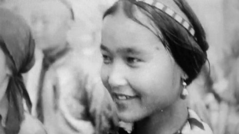

Toi qui

Claire Angelini
|
FR 2018 B+S: Claire Angelini – P: Albanera
|
Friday 12 oct 6.30 pm werkstattkino
The avant-garde filmmaker Dziga Vertov, a paragon of modernity in cinema, is best known and appreciated for his formal inventions and his theory of "life caught unexpectedly." But he has also been an untiring promoter of the cause of women and their concrete emancipation.
Claire Angelini Graduated at the Art Academy and the Sorbonne of Paris, Claire Angelini uses film as well as photography, installation and drawing to question the relationship between art, politics and history under the category of traces, ruin, recollection and survival of the images. Her work is situated in the conjunction of a historical record and contemporary issues. Main longfilms: 2017, Tales of the madhouse (Etats généraux du film documentaire de Lussas 2017), 116', 2015, This gigantic furrowing of the ground 72' (Berlinale Forum 2015), 2012 And out you go 85’ (Forumdoc Belo Horizonte 2012), War is looming, 2011, 80' (Cinéma du réel, granted at Rendez-vous de l'Histoire de Blois, 2011), 2009, Back to the land of childhood , 100'( Viennale 2009). Numerous shorts ( u.a.The cradle of art, 2017, Figment of lignt, 2016, Before yesterday the future, 2016, Break the sea, 2014, etc) installations and books. Claire Angelini lives as an artist and a cinematographer between Paris and Munich.
|
| Films Par l’eau et par le feu 2010 (5. UX) – La guerre est proche 2011 (6. UX) – Et tu es dehors 2012 (7. UX) – Ce gigantesque retournement de la terre 2015 (10. UX)
|